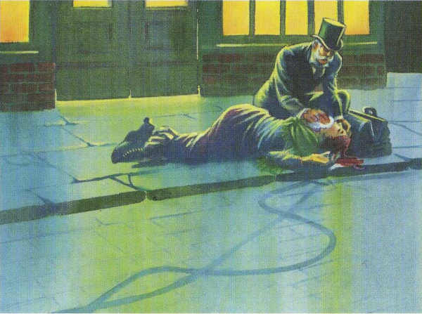

Mystery in London
18
The Whitechapel Killer attacks people with a long knife. Six women are dead because of him.
You arrive in Whitechapel and the police are waiting for you there. The woman is lying in the street, near the Rose and Crown. She is very hurt, so she cannot talk to you. You see some bicycle tracks on the road.
YOUR CHOICE
- You follow the bicycle tracks.
- You go into the Rose and Crown. You want to talk to the people there.
